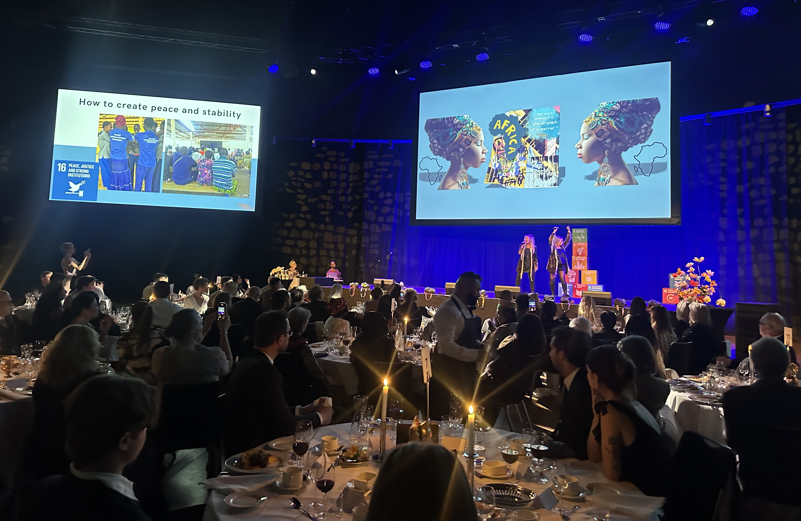

Utbildning
Inkluderande utbildning av hög kvalitet för livslångt lärande.
Everything we do is
OUR ANNUAL REPORT 2025
Under 2025 tog Nakamtenga stora steg mot ett lokalsamhälle som försörjer sig självt, utbildar sina barn, värnar sina invånares rättigheter och formar sin egen framtid.
Tillsammans gör vi en ljusare framtid till nutid

01
Skolan i Nakamtenga är inte bara en plats för lärande, den är navet i hela samhällsbygget. Under 2025 tog den ett historiskt steg närmare ekonomiskt oberoende av medel utifrån, samtidigt som varje skoldag fortsatte att ge barn mat, kunskap och framtidstro.

02
Farmen i Nakamtenga är mycket mer än ett jordbruk, den är en levande plattform för lärande, lokal försörjning och klimatanpassning. Under 2025 togs flera viktiga steg framåt: en ny brunn borrades, boskapsuppfödning startade, och förädlingsenheten producerade och sålde lokalt förädlade produkter på de omgivande marknaderna.

03
I ett land där demokratiska institutioner monteras ned och osäkerheten är påtaglig blir kunskap om rättigheter, lagar och samhällsstrukturer en grundläggande skyddsfaktor. Under 2025 genomförde Yennenga Progress 5 utbildningar och 5 öppna seminarier i Nakamtenga med totalt 596 deltagare.

04
Arbetet i Nakamtenga bärs upp av ett nätverk av människor i Sverige som engagerar sig med sin tid, sin kompetens och sina resurser. Under 2025 tog det engagemanget ny form med Warrior Princess-galan på Stockholm Waterfront, månatliga Guldram Salonger och partners vars bidrag är mycket mer än ekonomiskt stöd.
Inkluderande utbildning av hög kvalitet för livslångt lärande.

Hälsoinsatser inspirerade av Dr Denis Mukweges vision om helhetssyn, trygghet och värdighet.

Investeringar som skapar socialt, ekonomiskt och miljömässigt motståndskraftiga samhällen.